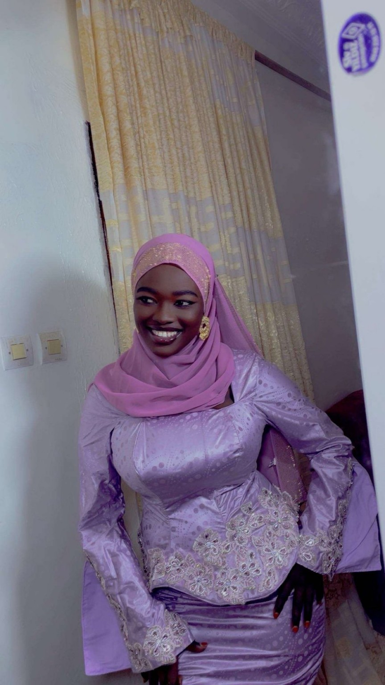
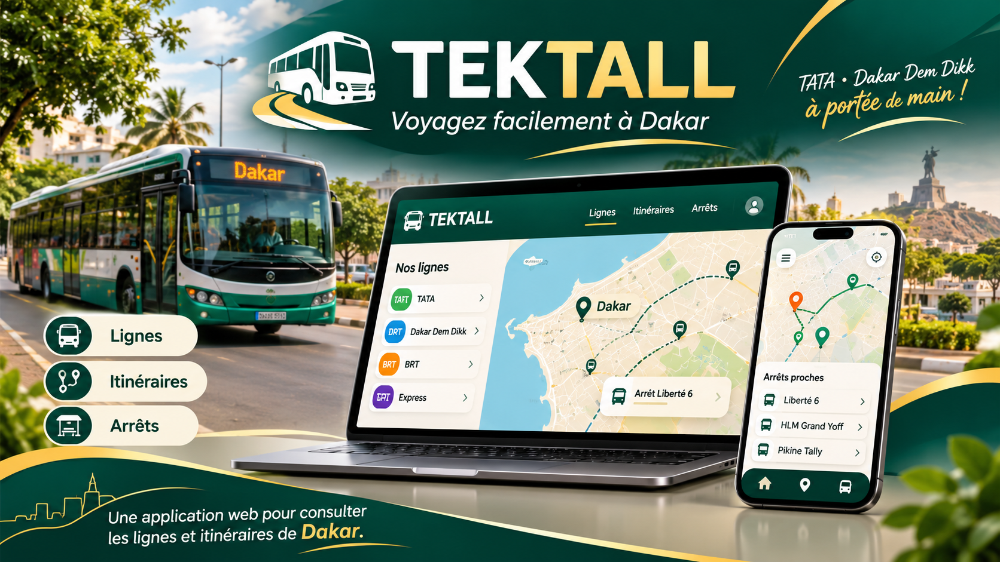
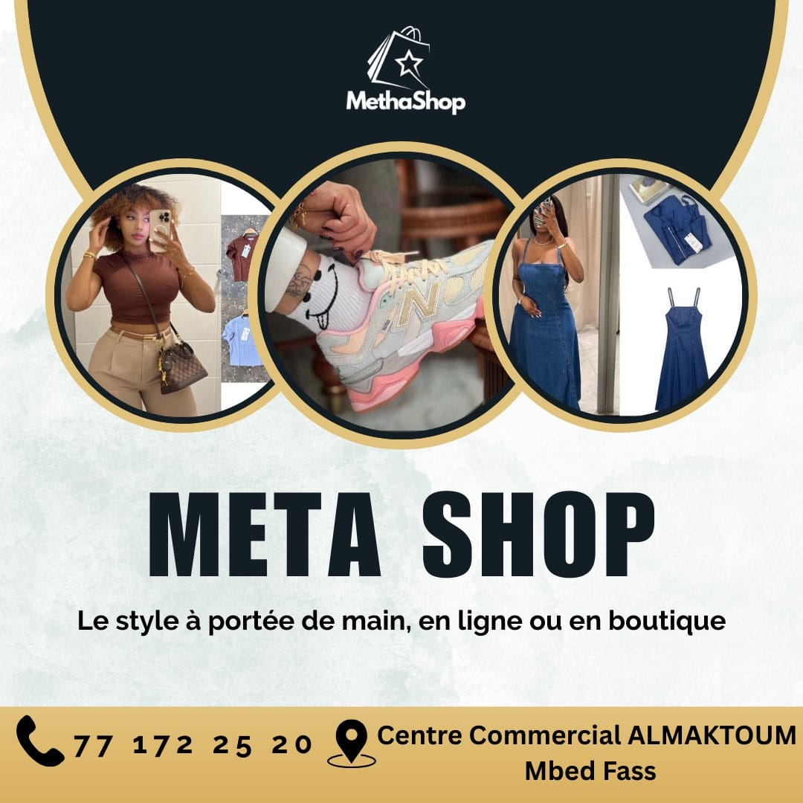
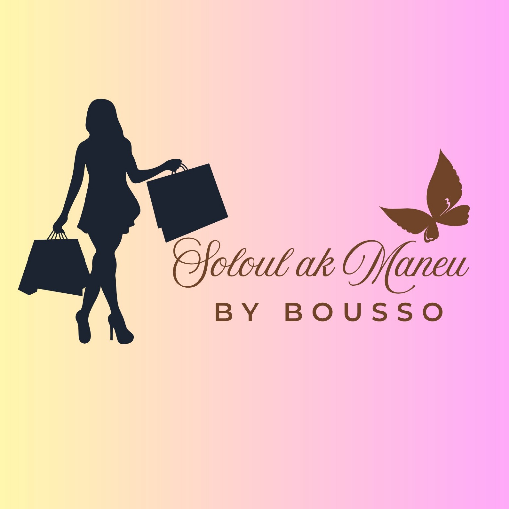
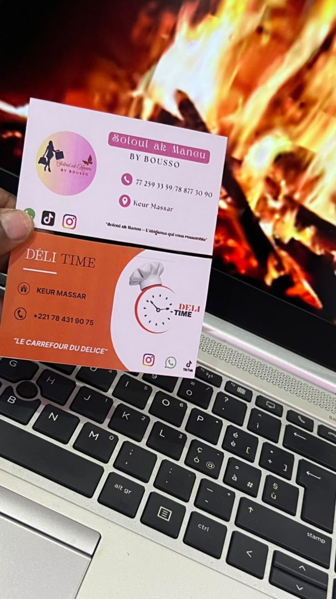
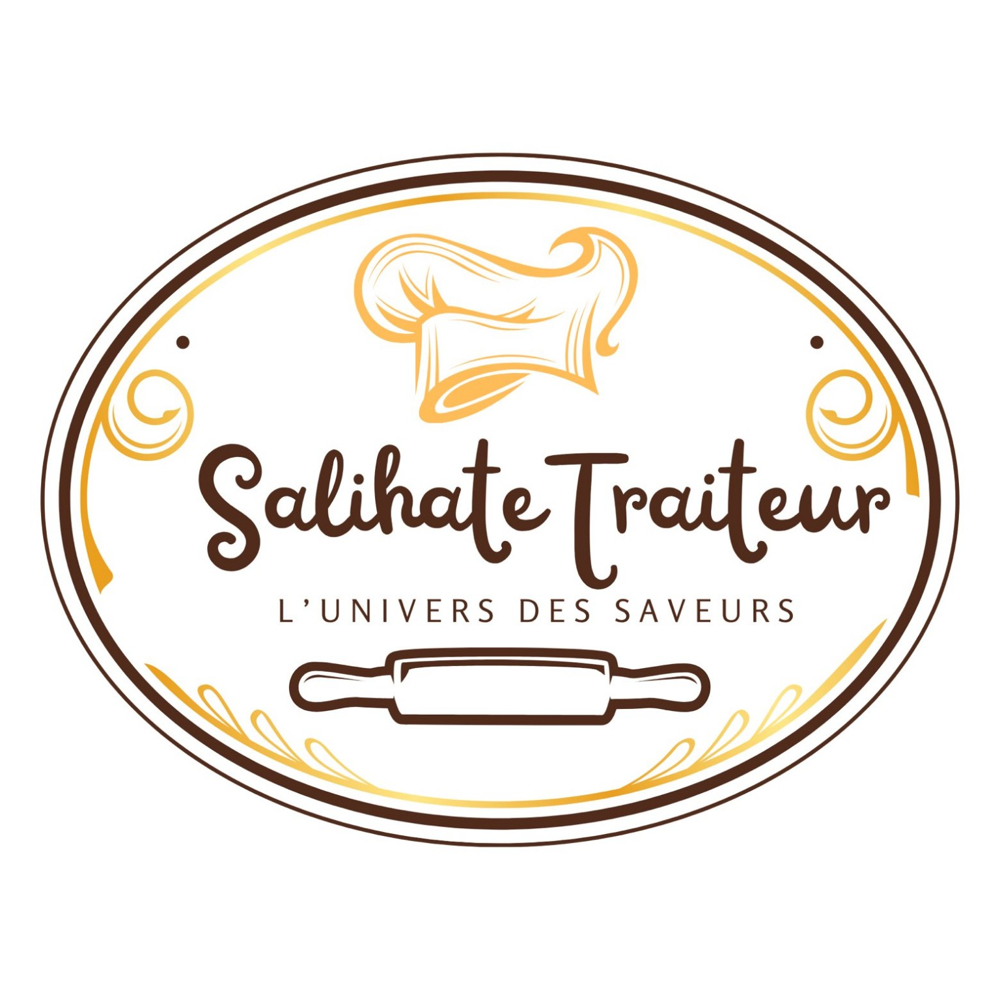
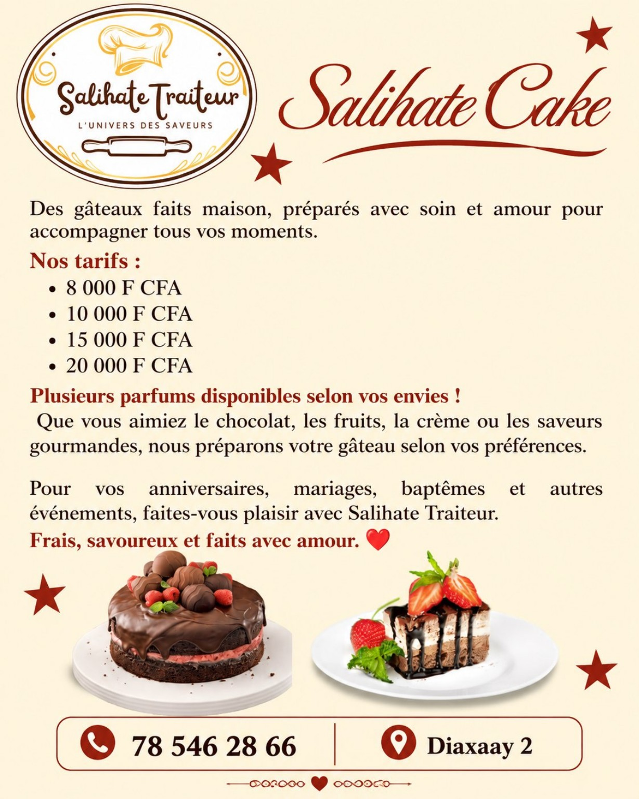
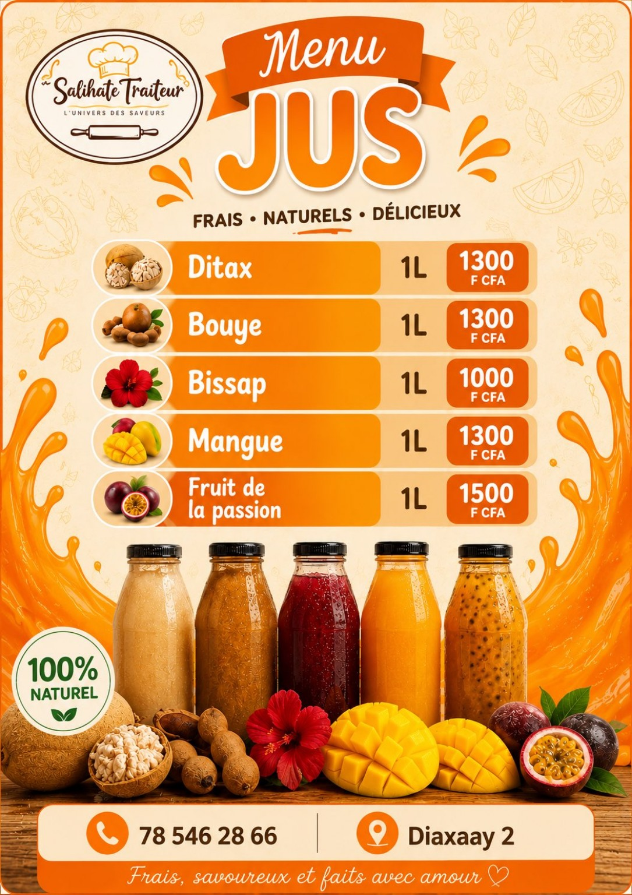
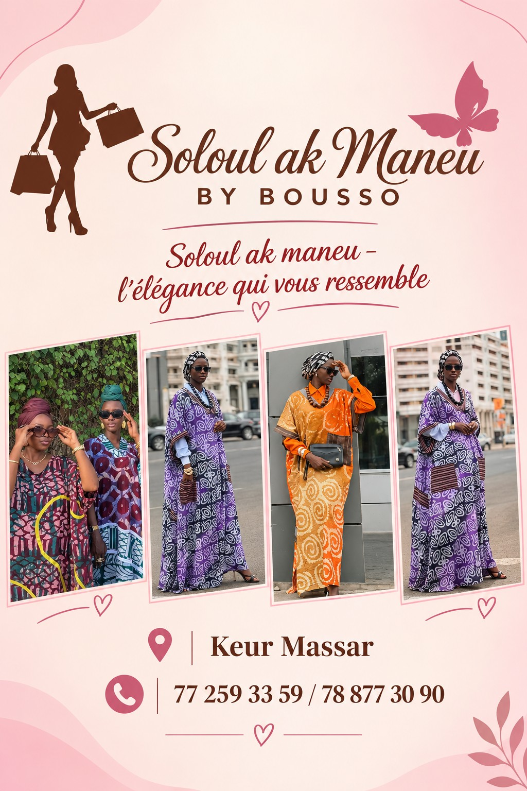
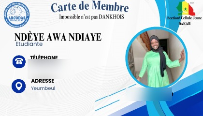

Développement web
Création d’interfaces et développement d’applications web.
PORTFOLIO · DÉVELOPPEMENT WEB & MOBILE
Je suis Ndeye Awa Ndiaye, développeuse web et mobile junior. J’aime concevoir des solutions numériques accessibles et donner vie à des idées à travers le design.

Diplômée d’une licence en informatique, spécialité développement d’applications web et mobile à l’Université Numérique Cheikh Hamidou Kane, je m’intéresse à la création d’applications qui répondent à des besoins concrets.
Mon parcours m’a aussi permis de développer le sens du service, l’écoute et la communication. En parallèle du développement, je réalise des supports graphiques : logos, affiches et cartes de visite.
Échangeons sur vos idées ↗Des compétences acquises en formation et mises en pratique dans mes projets.
Création d’interfaces et développement d’applications web.
Technologies utilisées notamment dans le projet Tektall.
Programmation, environnement de travail et suivi de code.
Conception de supports de communication pour des activités et associations.
Projets numériques et créations graphiques conçus au fil de mon parcours.

Faciliter les déplacements à Dakar, un itinéraire à la fois.
Développée en équipe, Tektall est une plateforme qui permet de consulter les lignes de bus TATA et Dakar Dem Dikk. Elle prévoit également un espace administrateur pour gérer les lignes, les arrêts et les horaires.
Voir mon GitHub ↗Logos, affiches et cartes de visite








Un parcours construit entre informatique, apprentissage continu et expérience de terrain.
Université Numérique Cheikh Hamidou Kane (UNCHK), Dakar.
Apprentissage automatique et techniques avancées d’IA — Force N.
Pharmacie AFIA 5, Dakar — accueil, conseil et accompagnement des clients.
Formation complémentaire en vente en pharmacie.
Groupe Scolaire Angela Davis, Dakar.
Je serais ravie d’échanger avec vous autour d’une opportunité, d’une collaboration ou d’une idée à développer.